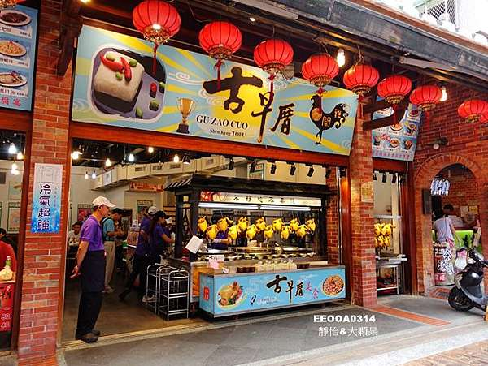
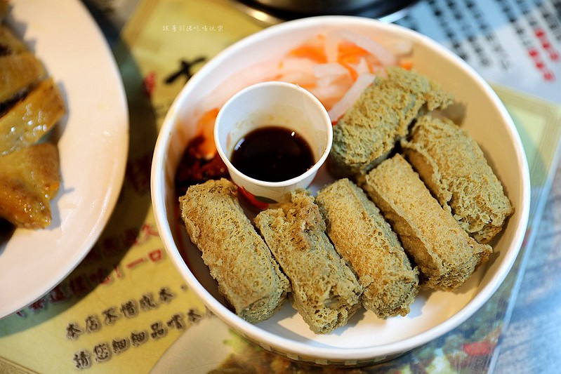

古早厝豆腐人文美食
google評價：4.3★
店家資訊
地址：新北市深坑區深坑街140號
營業時間：早上10:00到晚上8:00
店家電話：02-2662-2534

推薦菜單
清蒸臭豆腐150元 酥炸臭豆腐60元 金牌豆腐捲150元/250元
滷桂竹筍200元/350元 蒜泥蚵仔320元 白斬雞400元/700元
梅醋排骨280元 一碗小豬腳320元 金沙南瓜
湖南炒臘肉220元 荷葉蒸米糕350元 避風塘小卷/豬腳250元
顧客評論
家店除了臭豆腐料理之外，也有賣魚，也有賣肉，菜色非常豐富。炸臭豆腐的送餐速度通常很快，臭豆腐香酥內軟，醬汁不濃味道不會很重，除了很酥的臭豆腐外，臭豆腐旁的泡菜用了大量高麗菜梗，清脆可口又多汁。除了臭豆腐之外也推薦避風塘豬腳，吃下嘴鹹香麻辣，加上有豬皮的部分有膠質彈牙，使用避風塘的吃法，因此非常配飯。